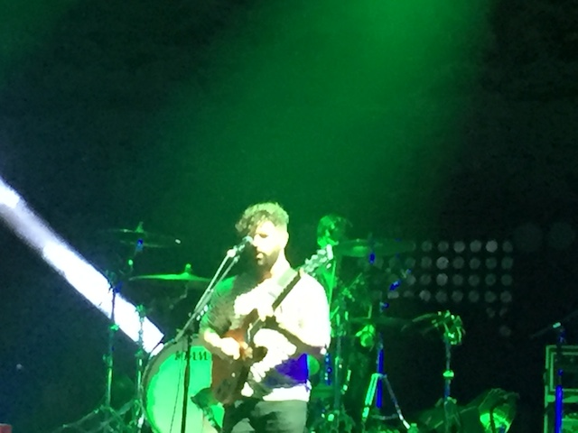
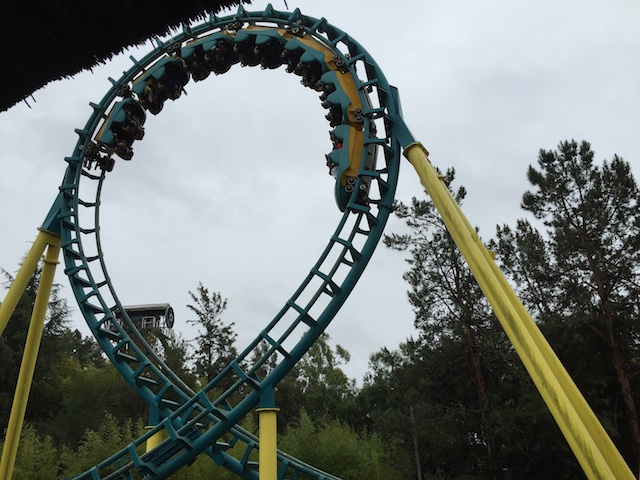
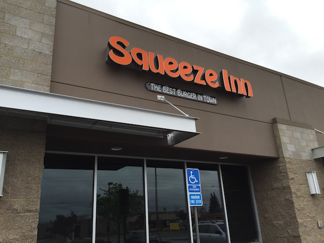

| |
Nor Cal Weekend 2016
All right. Time for another update. This was a fairly last minute weekend trip up to Northern California. Alex had an extra concert ticket to Foals, and screw it!! I'll go and see them! I like them. And hey, while I'm up there, I might as well get some credits and hit the one park in California I still need to go to, Gilroy Gardens. Well, I later learned that Gilroy Gardens is still in the off season (A: I figured that their off season was the same as SFDKs. If they're open, all the Nor Cal parks are open. B: As someone from SoCal, the whole concept of an off season weirds me out. WTF? Why are you closed? Then again, we don't have seasons down here. Envy me East Coast Coaster Enthusiasts! =P). But I still went up anyway (Don't worry. There'll be some roller coasters in the update. And first things first, pizza from Papa Joes. A very good Napa pizza place. Definetly recommend it if you're ever in town (or you may be so drunk off the wine you won't give a damn what you eat).
All right! Time for the show!
Now I'm just happy to be at a concert because it's been so damn long since I've been to a concert. The last show I saw was Hank Green and the Perfect Strangers at VidCon last year (Yep. I went to VidCon last year, and it was awesome). And before that, it was Andrew W.K on Halloween in 2013. So yeah. I don't really go to concerts anymore. I know I used to go to multiple shows every year. But then I went into financial lockdown to raise money for Scandinavia, and I've been in financial lockdown ever since fundraising for the next major trip (Japan, hopefully in 2017). But yeah. Financial Lockdown is a real bitch and one of the first things to go was nice concerts. So tonight was a bit of a flashback for me. Man, I really miss having money.
Foals is really good. Now, Pink Floyd's The Wall is by far the best show I've seen. There's no comparison. And my 2nd and 3rd favorite shows, Weird Al Yancovich and Primus (the audience may have sucked. But that show was still one of my favorites. I love Primus), tremendously better. But Foals is still very good. They're certainly not one of the shows I regretted seeing (Three Days Grace). Thumbs up from Incrediblecoasters.

♫ Forget the horror here. Leave it all down here. It's future rust and it's future dust. ♫
"OH MY GOD!!! I'M SEEING FOALS!!! I LOVE THEM!! CAN YOU TELL BY MY ATTIRE!!? I BOUGHT THIS GUITAR PICK NECKLACE OFF EBAY!!! I'M SO HAPPY TO BE HERE!!! DID I MENTION I LOVE FOALS!!!?"
They also had Cage the Elephant play afterwards. We saw a little bit of them (they're good), but we left early since I didn't want to stay there till 2 AM and Foals was the main reason we came.
Yeah. I may not have been able to get the credits at Gilroy this weekend, but I did wind up riding some roller coasters at Six Flags Discovory Kingdom this weekend.
 DAMN!!! Joker is going up FAST!!!
DAMN!!! Joker is going up FAST!!!
 *drool* IT LOOKS SO F*CKING GOOD!!!
*drool* IT LOOKS SO F*CKING GOOD!!!
I'm just happy that at least one park in the Bay Area isn't afraid to be open in the rain. Now let's have fun.
Blah! Screw Roar! Joker is coming and it's going to be INSANE!!! =P
I'm really looking foreward to riding this later this year. =)
All right. Now it's time for a marathon on Superman Ultimate Flight. Because yeah. This ride is awesome.
Lame!! V2 is closed today. But hey, it's all just for the rain. At least everything else is open.
I rode Kong again for some reason. And honestly, this was probably the best ride I ever had on it. It wasn't that bad. Far better than those horrendous 2010 rides I had on it.
All right! Now let's do Medusa in the rain!
"OUCH!!! OH GOD!!! WHY!!?" (No, Medusa is not rough. Riding in the rain is just painful).
"Hey look. Since my last visit, Six Flags Discovory Kingdom added a new roller coast--*bursts out laughing*. Oh man!! I can't!! I just can't say it!! LMFAO!!!"
Meh. Why not?

Hey Ceaser! I rode this ride just for you! =)
 All right! I was still ready to get a new credit this trip. So I treked out to Sacramento to go to Scandia. But *sigh* thanks to the stupid rain, it was closed. Well, at least I knew that this was likely to happen and I only stopped because it was nearby. You see, I mainly went to Sacramento because...
All right! I was still ready to get a new credit this trip. So I treked out to Sacramento to go to Scandia. But *sigh* thanks to the stupid rain, it was closed. Well, at least I knew that this was likely to happen and I only stopped because it was nearby. You see, I mainly went to Sacramento because...

I kept hearing great things about this resteraunt and their Squeeze Burger and just HAD to try it.
HOLY CRAP!!! I LOVED THIS PLACE!!! All that cheese may look gross, but it's so damn good *drool*. Easily one of the best burgers I've ever had and possibly the 2nd least healthy just after Heart Attack Grill. I know I have to come back to get that stupid Scandia credit. When I do, I'm eating lunch here, because I just loved this place. So glad I drove out for it, even with the closed credit.
Home
|